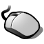

Deutsch
Deutsch Français
Français Italiano
Italiano Русский
Русский Español
Español Svenska
Svenska 日本語
日本語 Українська
Українська 中文 ［中文］
中文 ［中文］ Português
Português Suomi
Suomi Slovenčina
Slovenčina Magyar
Magyar Português (Brazil)
Português (Brazil) English
EnglishMaus
| Deskbar: | ||
| Ort: | /boot/System/preferences/Maus | |
| Einstellungen: | ~/Konfiguration/settings/Mouse_settings |
Im Auswahlmenü links kann die Art der Maus, respektive deren Tastenzahl, ausgewählt werden. Insbesondere für 1-Tasten Mäuse interessant: der Rechtsklick kann mit STRG-Linksklick und ein Klick auf die mittlere Taste mit STRG ALT-Linksklick erzeugt werden.
Die Tastenbelegung kann über das Markieren der entsprechenden Taste und dem dazugehörigen Auswahlmenü geändert werden.
Über die Schieberegler rechts kann die Doppelklick-Geschwindigkeit, die Geschwindigkeit des Mauszeigers und seine Beschleunigung eingestellt werden. Im Testfeld unter der Mausgrafik kann die Doppelklick-Geschwindigkeit getestet werden: Wird ein Wort durch Doppelklick nicht markiert, ist die entsprechende Geschwindigkeit zu hoch eingestellt (oder man muss halt lernen schneller zu klicken...).
Im Auswahlmenü wird bestimmt, wie Programmfenster auf Klicks reagieren. Hierfür gibt es drei Möglichkeiten:
| Das Fenster wird durch Klicken aktiviert und ganz nach vorn geholt. Dies ist die Standardeinstellung. | ||
| Beim Klicken auf ein Fenster wird dieses nur aktiviert, aber nicht automatisch in den Vordergrund geholt. Dies gelingt entweder durch Klicken auf den Fensterreiter beziehungsweise -rahmen oder durch Klicken irgendwo im Fenster, während die Fenstermanagement-Tasten STRG ALT gehalten werden. | ||
| Das Fenster unter dem Mauszeiger wird automatisch aktiviert. Um es in den Vordergrund zu holen, geht man vor wie bei beschrieben. |
Die Option vermeidet, ein Fenster erst aktivieren zu müssen, bevor eine Schaltfläche gedrückt oder ein Menü geöffnet werden kann. Allerdings besteht dann Gefahr, aus Versehen beispielsweise statt des Fensterreiters den "Schließen"-Button zu treffen und ein Programm ungewollt zu beenden. Andererseits kann damit der Arbeitsfluss deutlich beschleunigt werden.
Alle Einstellungen werden sofort im System übernommen.
| setzt alles auf Standardwerte zurück. | ||
| die Einstellungen, die aktiv waren, als das Programmfenster geöffnet wurde, werden wieder hergestellt. |